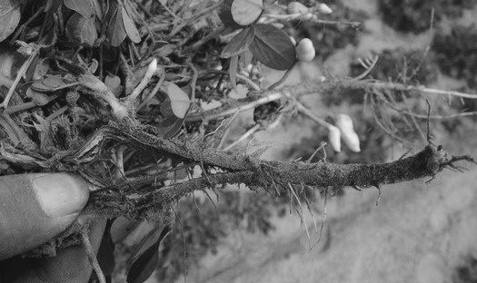

传统农贸面临的问题
农民的苦衷，消费者的无奈


农民的苦衷，消费者的无奈
挖掘新蓝海 共谋新发展


2016年，“中央一号文件”的问世，加速推进了农（渔）村电商的发展。
继2015年农（渔）村电商兴起之后，愈演愈烈，迎来发展风口。
在淘宝、京东等电商巨头强势出击和带动下，全国农（渔）村电商正形成“跨区域电商平台和本地电商平台共同发展、东中西部竞相迸发、 农产海货进城和工业品下乡双向互动”的发展格局。
但是，如何解决农产海货进城的销路以及如何让城里人更便捷的买到好东西的双向需求，为当前一大难题。
依托市场发展趋势，背靠国家政策红利，凭借雄厚IT及互联网技术，天奇网络推出一了农特产品分销&零售解决方案，打造PC端、移动端、 门店端三端融合的全渠道分销渠道，旨在帮助农商渔户拓展销售渠道，减少中间环节，获取更大利润。真正让农产海货卖出去，提升农户幸福感！
电商下乡 农产进城
线上线下 融合多渠道

线上线下 融合多渠道